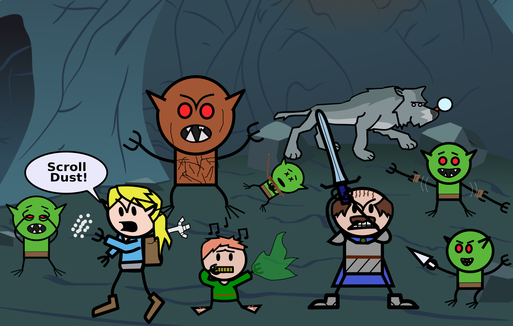

The Fellowship of the Strangled-Goblin
Starring: Beth Rogan, Chuck Squashblossom and Harren Treefriend (featuring Inspector Wolf)
Campaign Sessions
The party began their adventure in the nation of Murasa, a state on the edge of extinction,
driven there by a mysterious blight known as “The Withering”. Fifteen years previous, the borders of the
Wither began to expand rapidly in Murasa, resulting in a mass migration to the Western, coastal regions
(primarily the capital; Terimbehre). The Council struggled to keep the population under control,
as food and housing grew increasingly limited. Demands to evacuate the city went ignored, due
in part to lack of options - the small island nations to the North closed their borders to further refugees.
There was one faint hope. The oldest maps in Terimbehre showed a vast continent, Kebora, far to the West. However, no ship had ever returned from the Kivu Ocean in living memory and the Abantu seafarers refused all commissions. The Council had previously sent most of what few ships they still controlled, loaded with settlers and supplies, to attempt the crossing. Nothing had been heard since and all magical attempts at communication had failed. A lottery was held in Terimbehre to select a limited number of civilians for a second journey.

Beth Rogan, Chuck Squashblossom and Harren Treefriend were three of the lucky winners (though how much "luck" had to do with it depends on who you ask). Crossing through the increasingly agitated city, they met met up with their contact Zeke, to arrange passage to the Rakoro. After helping him (with great reluctance) load the last of the supplies and standing down a crowd of dock thugs, the party soon found themselves aboard the unusual Rakoro, headed out to sea.
There was one faint hope. The oldest maps in Terimbehre showed a vast continent, Kebora, far to the West. However, no ship had ever returned from the Kivu Ocean in living memory and the Abantu seafarers refused all commissions. The Council had previously sent most of what few ships they still controlled, loaded with settlers and supplies, to attempt the crossing. Nothing had been heard since and all magical attempts at communication had failed. A lottery was held in Terimbehre to select a limited number of civilians for a second journey.
Beth Rogan, Chuck Squashblossom and Harren Treefriend were three of the lucky winners (though how much "luck" had to do with it depends on who you ask). Crossing through the increasingly agitated city, they met met up with their contact Zeke, to arrange passage to the Rakoro. After helping him (with great reluctance) load the last of the supplies and standing down a crowd of dock thugs, the party soon found themselves aboard the unusual Rakoro, headed out to sea.
Having made it onto the Rakoro, the party was scarce able to find their bearings before a commotion arose on the docks behind them.
A large, richly dressed man stood shouting at the ship as it left, claiming that his three spots aboard the ship had been stolen.
After ordering one of his guards to fire upon the ship, the man was struck down by a pillar of fire brought into being by another
Rakoro passenger - Nirari, leader of the Preserver members on the ship.
Once the excitement died down, the party met with Ordell, the ship's captain, and were assigned jobs by Zeke (which they promised to faithfully complete). As the days passed they noticed a distinct tension between the Preserver guards and the settlers on board, but after suggesting armed revolt to a horrified Mugisha (a peaceful religious leader), the party avoided getting involved in any disputes.

When not busy chopping potatoes or performing comedy routines for the common deck (to mixed reviews), Beth, Chuck and Harren investigated the Rakoro. While attempting to pick a locked door in the hold they managed to jam the lock completely. Chuck managed to bash the lock off, and realizing that their break-in would be noticed, the party decided to replace it with a new one. One which presumably did not match the key of the original lock's owner. The party then took nothing from the room, "in case they noticed".
As part of their investigation of the strange magical runes covering the Rakoro, the party decided to spy on the cabin occupied by the Preservers. With the half-elven first mate Dikotsi looking on in confusion, the party clambered past in their climbing gear as part of a "routine cabin inspection". Peering into the room, they witnessed Nirari and his apprentice Gahiji undertaking a ritual clearly related to the engergy flowing through the ship's runes.
Once the excitement died down, the party met with Ordell, the ship's captain, and were assigned jobs by Zeke (which they promised to faithfully complete). As the days passed they noticed a distinct tension between the Preserver guards and the settlers on board, but after suggesting armed revolt to a horrified Mugisha (a peaceful religious leader), the party avoided getting involved in any disputes.
When not busy chopping potatoes or performing comedy routines for the common deck (to mixed reviews), Beth, Chuck and Harren investigated the Rakoro. While attempting to pick a locked door in the hold they managed to jam the lock completely. Chuck managed to bash the lock off, and realizing that their break-in would be noticed, the party decided to replace it with a new one. One which presumably did not match the key of the original lock's owner. The party then took nothing from the room, "in case they noticed".
As part of their investigation of the strange magical runes covering the Rakoro, the party decided to spy on the cabin occupied by the Preservers. With the half-elven first mate Dikotsi looking on in confusion, the party clambered past in their climbing gear as part of a "routine cabin inspection". Peering into the room, they witnessed Nirari and his apprentice Gahiji undertaking a ritual clearly related to the engergy flowing through the ship's runes.
The party are visited in their small cabin by the first mate Dikotsi, and a dwarven settler, Einar. The pair had noticed the
party's investigation of the ship, and had decided to share their own findings and plans with the group. Einar reveals that the
ship's glyphs are protective in nature, though something about their use feels "wrong". The party agreed to investigate the
Preserver cabin for further clues.
With Chuck standing lookout, Beth and Harren snuck into the cabin and began their search. Amongst the numerous tomes in the room they uncovered a coded journal, and were successfully able to decipher most of its contents. They discovered that despite understanding little about the artifact, the Preservers were using a mysterious orb to channel power into the ship's magical defenses, in order for the Rakoro to survive its journey across the Kivu ocean.

While the party mulled over their discoveries, numerous shades manifested on the Rakoro. While not overtly aggressive, they responded with force when confronted, but withdrew after contaminating most of the ship's fresh water supplies. It was then decided that the Rakoro would detour to an island marked on one of the captain's ancient charts, to search for supplies. During this meeting, both Gahiji and the party agreed to be part of the group that would leave the ship to explore.
With Chuck standing lookout, Beth and Harren snuck into the cabin and began their search. Amongst the numerous tomes in the room they uncovered a coded journal, and were successfully able to decipher most of its contents. They discovered that despite understanding little about the artifact, the Preservers were using a mysterious orb to channel power into the ship's magical defenses, in order for the Rakoro to survive its journey across the Kivu ocean.
While the party mulled over their discoveries, numerous shades manifested on the Rakoro. While not overtly aggressive, they responded with force when confronted, but withdrew after contaminating most of the ship's fresh water supplies. It was then decided that the Rakoro would detour to an island marked on one of the captain's ancient charts, to search for supplies. During this meeting, both Gahiji and the party agreed to be part of the group that would leave the ship to explore.
As the Rokoro arrived at the island of Qalin, several vicious Sahuagin climbed the sides of the ship
to attack the crew. The fish-folk were quickly brought to their knees by the party, and an uncomfortably long debate on how edible
the creatures might be was interrupted by the crew readying the expedition to depart. Shortly after landing and setting up camp, Beth discovered
that Gahiji had secretly left the group, and the party attempted to follow.
After raiding an old cellar for its Dwarven spirits, the party headed north, passing an abandoned watchtower standing at the mouth of a valley headed north. Harren noticed that the cliffs surrounding them appear to have been raised suddenly, as if during an earthquake or similar event. Continuing onwards, the party reached an "unnaturally" occurring jungle, which concealed several ruined structures and monuments. They discovered Gahiji at once such location, seemingly intent on a second magical orb. The ritual was interrupted as numerous skeletal figures (both elven and dwarven) emerged from the jungle floor to the attack. The party managed to fight the creatures off, but Gahiji escaped.

The party continued north to a desolate wasteland, matching the description of the Wither areas back in Murasa. Chuck and Harren ventured briefly into a crater near the center and acquired a mysterious lump of unrefined metal, before heading south again. Finding that Gahiji was not in camp, the group wandered east, encountering a strange group of creatures fishing outside of an overgrown cave. Unable to communicate, the party slaughtered the poor goblins without mercy, despite their (hypothetically) peaceful overtures.
After raiding an old cellar for its Dwarven spirits, the party headed north, passing an abandoned watchtower standing at the mouth of a valley headed north. Harren noticed that the cliffs surrounding them appear to have been raised suddenly, as if during an earthquake or similar event. Continuing onwards, the party reached an "unnaturally" occurring jungle, which concealed several ruined structures and monuments. They discovered Gahiji at once such location, seemingly intent on a second magical orb. The ritual was interrupted as numerous skeletal figures (both elven and dwarven) emerged from the jungle floor to the attack. The party managed to fight the creatures off, but Gahiji escaped.
The party continued north to a desolate wasteland, matching the description of the Wither areas back in Murasa. Chuck and Harren ventured briefly into a crater near the center and acquired a mysterious lump of unrefined metal, before heading south again. Finding that Gahiji was not in camp, the group wandered east, encountering a strange group of creatures fishing outside of an overgrown cave. Unable to communicate, the party slaughtered the poor goblins without mercy, despite their (hypothetically) peaceful overtures.
Beth, Chuck and Harren continued their murderous rampage into the goblin cave, and then through a narrow passage that led down into an ancient refugee complex. Here they encountered
a relatively peaceful clan of Ughr and a not-so-peaceful swarm of goblins. Making their way through the crumbling hallways, Harren
avoided elective goblin surgery, and then liberated the local wolf population. Beth wandered off from the group and was confronted by two goblins (with a total of six arms), and brutally
strangled one of them to death. Chuck somehow passed his move silently check, but then failed his reflex save and gets stenched (again). The party narrowly avoids a bad case of goblin crabs.

Moving further into the depths of the complex, they stumbled upon a host of goblins busy bludgeoning each other unconscious as they kick an old skull about. Interrupting the game, the party massacred
the last of the noble goblin athletes and uncovered some ancient scrolls and armour. They also discovered Gahiji slinking about the area and decided to question him about his recent actions.
After a brief but tense confrontation, Gahiji and the party agreed to make their way back to the expedition camp site together.

When the group arrived back at camp, they found the rest of the expedition hurriedly packing up to leave, reporting that numerous undead (similar to those the party encountered in the jungle) were converging on that location. The party fought their way to the boats, with Chuck covering the retreat, Harren healing Chuck's many, many wounds and Beth fire-bombing anything that moved. Despite the appearance of a mysterious undead creature and the near drowning of a loot-hungry fighter, the group made it safely off of the island with only a few casualties.
When the group arrived back at camp, they found the rest of the expedition hurriedly packing up to leave, reporting that numerous undead (similar to those the party encountered in the jungle) were converging on that location. The party fought their way to the boats, with Chuck covering the retreat, Harren healing Chuck's many, many wounds and Beth fire-bombing anything that moved. Despite the appearance of a mysterious undead creature and the near drowning of a loot-hungry fighter, the group made it safely off of the island with only a few casualties.
Having returned to the Rakoro one Preserver guard lighter, the party discovers that much has happened in their absence. The ghostly figures that appeared onboard days earlier
have been returning frequently, with multiple sightings each night while the ship was at rest. Tensions between bullies amongst the Guard and the civilian passengers continued to
mount, with the threat of open conflict breaking out. And an incident amongst the settlers themselves has led to two of them being imprisoned in the bilge deck - the drunk Ntwali and
the hot-headed (but well intentioned) Neza. Neza's husband pleaded with the party to intervene (as Ordell would soon have had no choice but to release Ntwali) and they sprang into
action.

Rather than attempt to sway Nirari (the nearest official capable of passing judgement) to punish Ntwalai, or convince his wife Iragena to move out with the children, or any other predictable course of action, Beth and Harren decided to hand Ntwali a flask of spirits spiked with an enormous amount of mysterious fungus spores, superficial exposure to which had left Chuck violently nauseated on the island. The Neutral / Chaotic Good duo then added an additional lock to his makeshift cell, ensuring that no help was forthcoming, while the Lawful Neutral Chuck made a token effort to question their actions. The fungus spores (each dose capable of permeating a 25 square foot area) reached Ntwali's liquor-augmented digestive tract, and events took a turn.
Eventually realizing that death via sudden onset dysentery was perhaps too harsh a punishment (or just not wanting to ruin another pair of shoes), Beth eventually freed Ntwali from his cell, after extracting a promise that he would never again raise a hand to his family. Having resolved the issue in suitable heroic fashion, the party then reluctantly returned their attention to helping Dikotsi and Einar uncover what Nirari and Gahiji were up to. The Rakoro was caught up in a sudden and unnatural storm as the matter came to a head, with the Preserver duo making clear their intent to use the strange, energy channelling orb to power the ship's defenses, and First Mate Dikotsi making equally clear his intent to stop them (at sword point).
Rather than attempt to sway Nirari (the nearest official capable of passing judgement) to punish Ntwalai, or convince his wife Iragena to move out with the children, or any other predictable course of action, Beth and Harren decided to hand Ntwali a flask of spirits spiked with an enormous amount of mysterious fungus spores, superficial exposure to which had left Chuck violently nauseated on the island. The Neutral / Chaotic Good duo then added an additional lock to his makeshift cell, ensuring that no help was forthcoming, while the Lawful Neutral Chuck made a token effort to question their actions. The fungus spores (each dose capable of permeating a 25 square foot area) reached Ntwali's liquor-augmented digestive tract, and events took a turn.
Eventually realizing that death via sudden onset dysentery was perhaps too harsh a punishment (or just not wanting to ruin another pair of shoes), Beth eventually freed Ntwali from his cell, after extracting a promise that he would never again raise a hand to his family. Having resolved the issue in suitable heroic fashion, the party then reluctantly returned their attention to helping Dikotsi and Einar uncover what Nirari and Gahiji were up to. The Rakoro was caught up in a sudden and unnatural storm as the matter came to a head, with the Preserver duo making clear their intent to use the strange, energy channelling orb to power the ship's defenses, and First Mate Dikotsi making equally clear his intent to stop them (at sword point).
The party decided to join Dikotsi in his assault on the guards, as Nirari retreated into the cabin to summon the power of the orb. Showing no quarter, Beth, Chuck and Harren slew
or rendered unconscious (or rendered unconscious and then left burning to death) each of their foes, including the Preserver apprentice Gahiji. They burst into the cabin just in time
to see Nirari vanish in front of them. As the storm continued to swell around them, the party heard an ominous voice speaking telepathically, promising their destruction. The monsterous
creature Kinone then attacked the main deck, but was driven off by the quick-thinking efforts of the party and ship's wizard, who cooperated to drive the beast off of the ship. The Rakoro
had taken on too much damage however, and the passengers began a desperate evacuation

Chuck hastily assembled a makeshift raft, while Harren and Beth loaded it with what supplies they could quickly scrounge and cast off. Encountering Iranzi, the guard leader, floating helpless in a barrel, they graciously allowed him to hitch a ride (so long as he kept his distance). Eventually they began to approach land, their first sight of the new continent Kebora. Despite their valiant attempt to navigate a series of treacherous rocks safely, the raft broke apart on the shoals, with the party managing to drag themselves onto the shore.
Chuck hastily assembled a makeshift raft, while Harren and Beth loaded it with what supplies they could quickly scrounge and cast off. Encountering Iranzi, the guard leader, floating helpless in a barrel, they graciously allowed him to hitch a ride (so long as he kept his distance). Eventually they began to approach land, their first sight of the new continent Kebora. Despite their valiant attempt to navigate a series of treacherous rocks safely, the raft broke apart on the shoals, with the party managing to drag themselves onto the shore.
Having arrived relatively safe and sound on solid land, the party passed the night in a nearby cave, before setting out to explore this new area. Harren was able to keep them fed by foraging for
edible plants and berries (sadly no potatoes) and the party discovered an abandoned cabin, leading them to a desolate forest ruin inhabited by a distinctly unfriendly giant snake. Fighting their way
free, the group made their way to a small peninsula, where they spent a fearful night huddled amongst the scrub trees, listening to the crash of some large creature wandering about the coast below. In
they morning, they quickly travelled back along the western coastline, where they encountered a frightened young man, Bill. Bill had managed to escape a nearby gang of bandits, and with a few threats
(and lack of real options), he led the party back to the entrance, where they managed to ambush a returning patrol.

One of the other prisoners managed to free themselves in the confusion and finished off the last bandit before warily thanking the party for their timely arrival, and for their return of a strange badge found on one of the thugs. She introduced herself as Dirge, and led them to the remaining captives: John, Paula and Ollin (the lookout from the Rakoro).
One of the other prisoners managed to free themselves in the confusion and finished off the last bandit before warily thanking the party for their timely arrival, and for their return of a strange badge found on one of the thugs. She introduced herself as Dirge, and led them to the remaining captives: John, Paula and Ollin (the lookout from the Rakoro).
{kind=link}